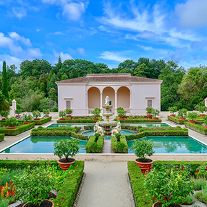
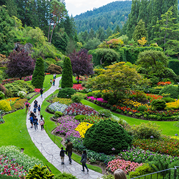

Award-Winning Gardens:

2020
Best Private Garden under €30,000
ALCA Landscape Awards
This development aimed to take advantage of the warm climate found on the Hugh Town Island. Using water as the main focal point, rose & dahlia beds were designed for a summer burst of color. Additionally, a tropical bed and rockery were planted to achieve a mediterranean style.

2019
Best Commercial Design under €50,000
Glasca Garden Awards
Visted by thousands each year, Waymar park underwent a re-design and development project in 2019. The aim was to improve biodiversity and provide year-round interest. Approximately 5000 native trees were planted during this time, 600 shrub varieties and 10 meadow plots.
2017
Best Urban design under €30,000
ALCA Lanscape Awards
Proving that small gardens can be magicial, a 30 sqm plot was transformed into a urban paradise. A soft palette of blues, purples and pinks was used to create a sense of space throughout the area, and this was combined with a mix of tree ferns and low growing alpines.